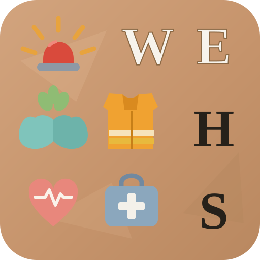

Incidents
Report, investigate, CAPA

WEHS liquid glass
Module icons sit on tinted glass discs — specular highlight, inner rim, kit colour showing through frost — not neon 500-gradients. Selected tabs, chips, rows and pickers use the same language: translucent glass with a teal rim, never an opaque fill. An uploaded organization logo retints those accents; the page wash is a picker on Organization settings. The vendor mark is not pinned to the corner.
Report, investigate, CAPA
Risk matrix and controls
Extinguishers, AEDs, FAS
Selections
Logo mapping
Kit defaults from wehs.svg. Live app rewrites --canvas and
--brand-* from the org logo / background picker.
Logo → theme
Sampled accent on selections and the primary button; canvas lightened until ink clears AA. Owner can still pick cream / white / a custom swatch.